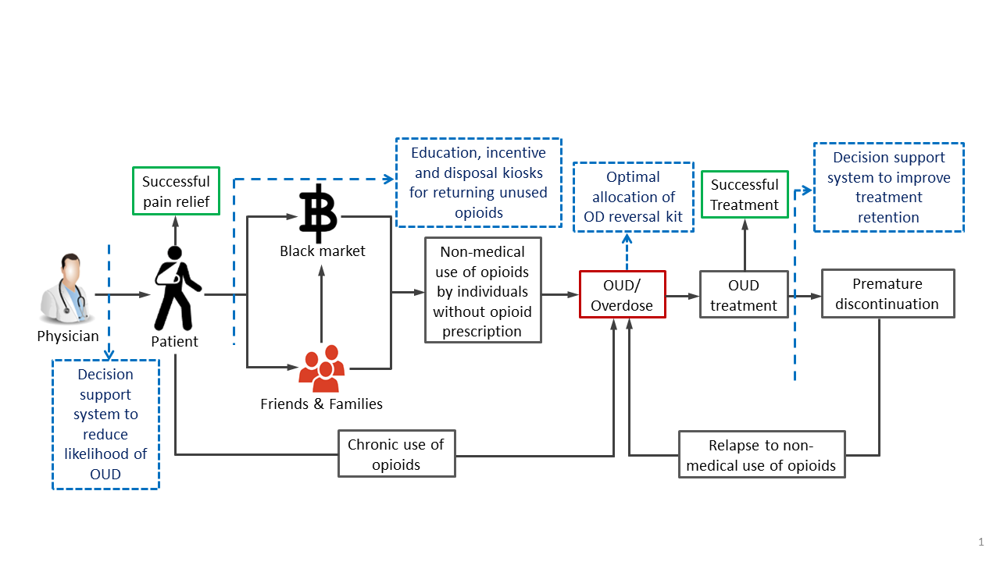

Decision Analytics Lab
Research Projects:
1. Robust Causal Inference for Large-Scale Observational Studies:
We develop matching models and algorithms to make robust causal inference decisions from large-scale observational studies. Ensuring robustness in causal inference alone produces a computationally intensive optimization problem. With the usage of big data, such an optimization problem becomes even more difficult to solve. We design scalable computational approaches that can handle large scale optimization problems emerging in robust causal inference, and help make policy decisions in Healthcare, Manufacturing, and Service industries by leveraging the power of big data.
 |
2. Health AI:
We analyze large-scale healthcare data by leveraging data mining and machine learning techniques to identify opportunities for improvement in healthcare. Our team has been involved in a number of health AI/Analytics projects where multiple large-scale healthcare datasets are being used: HCUP Nationwide Readmission Database, Massachusetts and New Hampshire All Payer Claim Database and State of California Hospital Discharge Database.
2.1 Leveraging AI and OR to address the opioid addiction epidemic
The opioid crisis in the United States has reached alarming proportions, as evidenced by the staggering statistics. In 2021, the number of individuals who lost their lives due to drug overdoses surpassed six times the figures recorded in 1999. Even more concerning, the year 2021 witnessed a distressing 16 percent surge in drug overdose deaths compared to the previous year, with opioids implicated in over 75 percent of the nearly 107,000 fatalities. A deeper analysis of the crisis reveals a complex landscape: while opioid-related death rates increased by over 15 percent, prescription opioid fatalities remained constant. On a more hopeful note, heroin-related deaths decreased by nearly 32 percent, but synthetic opioids (excluding methadone) saw a troubling rise of more than 22 percent. This crisis has become a critical issue demanding urgent attention and comprehensive solutions for Disease Control and Prevention. In Massachusetts, death rate increased to 33.5 per 100,000 people in 2022, 2.5 percent higher than in 2021 and 9.1 percent higher than the pre-pandemic peak in 2016.
Our research indicates that currently, physicians lack effective prescribing tools to help guide the informed and judicious prescribing of opioid analgesics. Moreover, many patients get prescribed with too many opioids of which they don’t use up completely, and surplus drugs are not disposed of properly. This facilitates the diversion of prescription opioids to secondary users and black markets.
To address this critical crisis, We have been involved in multiple research projects pertinent to opioid crisis funded by a series of grants from the Centers for Disease Control and Prevention (CDC) in partnership with the Massachusetts Department of Public Health (MDPH) and an NSF CAREER award. This work has led us to identify the key areas (e.g., blue dashed box in the Figure) to address this multifaceted critical challenge and how to tackle it by leveraging sophisticated AI and OR techniques.
|  |
2.1.1 Personalized OUD Prescription
We develop predictive models, leveraging large-scale healthcare data with AI, to proactively identify individuals who are at a heightened risk of developing Opioid Use Disorder (OUD). This predictive outcome is very useful in identifying the right treatment options (e.g., medication and dosage), given that each medication comes with its own risks and benefits. We propose to use a multi-objective decision analytics framework, integrating AI, operations research (OR), and knowledge from domain experts. This tool serves as a vital resource for healthcare practitioners, aiding them in generating personalized medications based on each patient's unique profile and risk of OUD.
2.1.2 Prescription Opioids Diversion Reduction Policy
A critical problem with the opioid epidemic crisis is that many patients get prescribed too many opioids and don't use up every pill. Additionally, they don't dispose of the surplus drugs properly, potentially facilitating the diversion of prescription opioids to secondary users and the black market. We propose to use AI to understand how the Opioid Use DisorderOverdose (OUDOD) crisis varies across different geographical locations, communities, and socioeconomic demographics. It also helps identify and rank the critical regions. Subsequently, we propose to develop an optimization framework to identify optimal policies for allocating resources, such as installing disposal kiosks and providing motivating education/training and incentives. We also conducted a project to study Incentive design for buyback program to reduce the supply of opioids to secondary users.
2.1.3 Optimal Policies for Improving Treatment Retention
OUD is a treatable condition, and one of the FDA-approved medications for OUD is buprenorphinenaloxone. Successful treatment with buprenorphinenaloxone is linked to reducing morbidity and mortality in OUD patients. Unfortunately, many OUD patients discontinue buprenorphine treatment prematurely. Medication adherence during buprenorphine treatment is often inconsistent among patients. We propose to use AI, leveraging claim data, to identify predictive factors such as demographic information, addiction severity, comorbidities, and treatment adherence patterns that contribute to treatment discontinuation. These models provide real-time risk assessments for individual patients, enabling healthcare providers to proactively intervene when the risk of discontinuation is high. A decision analytics framework, integrating reinforcement learning, is proposed to develop to optimize resource allocation for better treatment retention and improved patient outcomes.
2.1.4 Optimal Allocation Policies of Overdose Prevention Toolkit
To mitigate the risk of fatal and non-fatal overdoses (OD), the availability of a prevention toolkit is a lifesaving measure. We propose to use artificial intelligence (AI) and operations research (OR) to construct a decision analytics framework for allocating these lifesaving toolkits most effectively to the communities that require them the most. This process involves utilizing AI to analyze historical data, monitor real-time information sources, and create predictive models for identifying high-risk areas and individuals. Subsequently, we optimize the distribution of the toolkit, offer training, and consider factors such as risk assessment, response time, and resource availability.
2.2 Analytics to inform healthcare policy making on hospital readmission
Our research leveraging analytics has the following two aims:
To reduce preventable hospital readmission by ensuring that policy regarding unplanned hospital readmission is informed via scientific evidence.
To ensure well-coordinated and personalized healthcare services in an effort to improve nation-wide healthcare experience.
The essential idea is to harness the potential of cutting-edge data-mining and machine learning techniques to facilitate the use of big-data analytics in reducing preventable hospital readmission. We use several state and nationally representative sample of hospital discharge database to investigate the patterns and determinants of non-index hospital readmission. The objective is to assess the effect of hospital readmission reduction program (HRRP) on the increase in such non-index readmission among patients with Congestive Heart Failure (CHF), Acute Myocardial Infraction (AMI) and Pneumonia (PNE), which were the initial condition included in the HRRP. Our research also informs the necessity of customized and intensive intervention plans for SMI patients to reduce their healthcare resource utilizations in post-surgical periods after 30-day of initial discharge.
3. Methods for Large-scale Optimization:
In the era of large-scale data, one of the key challenges is to design efficient optimization techniques that can adapt to vast amounts of data. In recent times, there has been a wave in the demand from exponents, in fields such as signal processing, computer vision, artificial intelligence, machine learning, and data mining, for methods that are able to cope with the challenge of big data. My team is developing efficient and scalable algorithms for solving large-scale Optimization problems arising from real-world problems.
We develop mathematical models and solution algorithms for solving large-scale location problems, vehicle routing problems, production planning problems originated from business, engineering and service organizations such as healthcare, energy, humanitarian logistics and investment decision etc. Our models and highly scalable algorithms are capable of providing high-quality solutions efficiently. We also develop uncertainty quantification techniques with the help of machine learning techniques to help generate influential scenarios to solve large-scale stochastic programs. Furthermore, my team is developing accelarated algorithms to solve large-scale optimization problems.
4. Vehicle and Drone Scheduling and Routing for Humanitarian Operations:
After a disaster, people in the affected community are often trapped and find themselves in dire need of medical supplies without means of communicating their needs as the communication and transportation infrastructure themselves are broken down. In such cases, unmanned aerial vehicles (UAV/drone) supported by ground vehicles (truck) can be used to:
Provide temporary communications signals
Perform last-mile delivery of emergency supplies
The drones are carried over by trucks to suitable satellite launching locations, from where they are dispatched to serve as communication hotspots and last-mile delivery vehicles. The ongoing project focuses on the development of a framework that can determine time-sensitive decisions optimally and fast.
The problem is a variant of a two-echelon vehicle routing problem, where the first echelon vehicles are trucks carrying drones travel up to the satellite locations and drones are then deployed to carry out hotspot signal generation and last-mile delivery operations. Current literature is still lacking in addressing the problem of simultaneous scheduling and routing decisions with ground and aerial vehicles in a two echelon setting with uncertain conditions.
Towards building the decision framework for the current problem, we first built a framework for facility location decision problem, which is adaptable for making satellite location decisions for the two-echelon problem. We then built a single-echelon vehicle scheduling and routing planning framework using a column generation based approach. To formulate and solve the two-echelon vehicle and drone routing and scheduling problem with deterministic demand, we have extended the column generation based approach to combine decisions for hotspot and delivery drones. For stochastic demand case, we have designed a two-stage robust optimization approach based on column and constraint generation method.
5. Intelligent Decision Making:
We develop possibility theory based artificial intelligence (AI) techniques for making decisions when the decision-relevant information is imprecise in nature due to the inherent uncertainty, and when multi-modal conflicting attributes and multiple subject expert’s opinion altogether add further complexity in the decision-making process. Some of our work in this domain mainly inform the development of Decision Support System (DSS) that can handle Big-data driven graphical information and quantify epistemic uncertainty. We also developed a conflict aggregation algorithm that can facilitate the decision-making process under the participation of multiple subject experts who usually possess conflicting opinions regarding the evaluation of an alternative subject to attributes considered in the decision-making process.
6. Decision Making Framework for Renewable Energy:
Variable renewable energy generators (VRGs) are beginning to have a more prominent role in the power market, most predominantly, wind energy, which since 2008 to date, has formed 64-77% of the total year utility from renewable sources. In 2018, the energy produced from wind energy alone in the US amounted to 94 GW. Currently wind energy is available nationwide, and is expected to be a sustainable source of renewable energy in all 50 states by 2050. Moreover, distributed wind is also exported outside of the U.S. with 70 MW, representing a value of $400 million being exported since 2012.
However, one of the drawbacks with VRGs is due to their variable nature, there is a lot of uncertainty associated with their energy production. Energy production is dependent on environmental factors that makes forecasting and decision making difficult. As such, it is imperative to have the right tools in place to be able to not only forecast energy production, but also have the right systems to ensure a robust framework that will not be exposed to dips or outages. Energy producers suffer financial consequences for deviating from estimates made as they are penalized for underestimating production, and not compensated for over-production. Consequently, accurate forecasting is critical to the profitability of a farm. As such, the Department of Energy has invested considerably in projects aimed at improving wind power forecasts. However, there is still a myriad of other factors that need to be considered by the plant when submitting commitments, such as market prices and regulation requirements.
To both optimize the production of VRGs, as well as mitigate risks, there exists a need for the development of decision-making frameworks that combine with the Department of Energy’s advanced forecasting capabilities and allow for more informed decision making. The objective of our research is to expand on current literature by creating robust data driven decision-making frameworks that include multiple aspects of the energy market and allows for decisions to be updated as more information is made available.